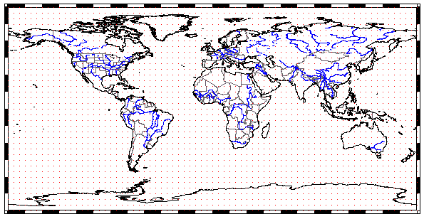

This projection in not conformal, not equal area, and not a good compromise. It should never be used for large scale, detailed mapping. For a map of the world, it can be an acceptable choice if you consider the alternatives, since any projection will have compromises. This does show the poles, which the Mercator does not.
While not a good choice for mapping, it is a very common choice for globlal data sets such as ETOPO or Blue Marble or global DEMs. If those data sets are to used for smaller area, they should be reprojected into a more appropriate projection on the fly.
Many synonyms:
Last revision 7/21/2021